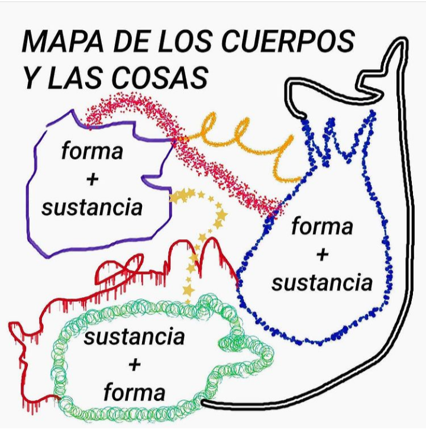
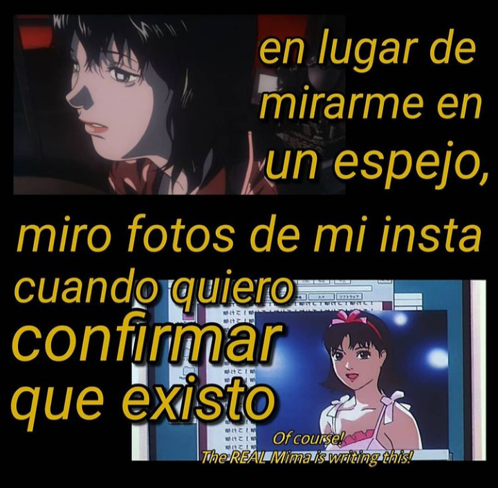
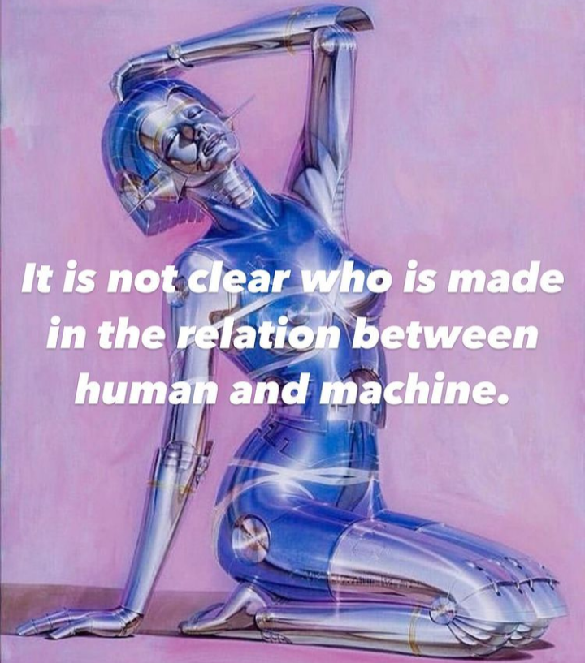
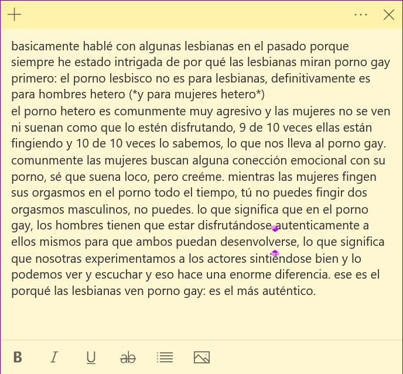
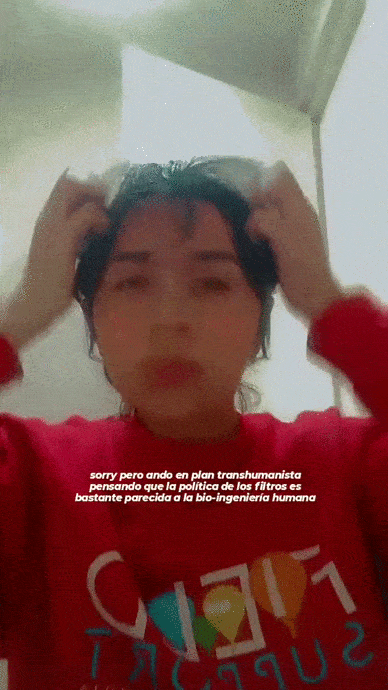
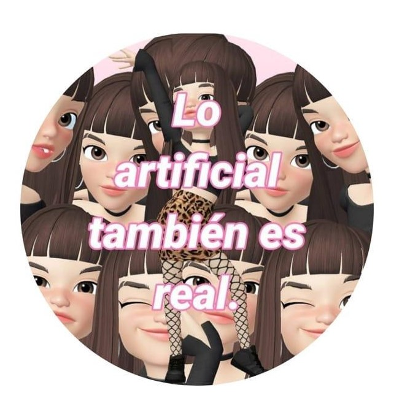
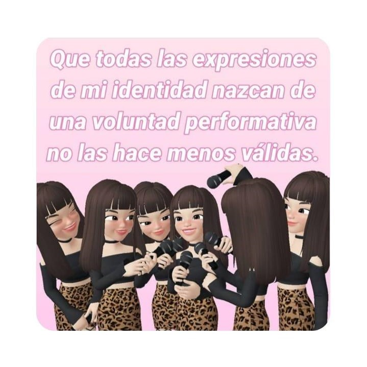
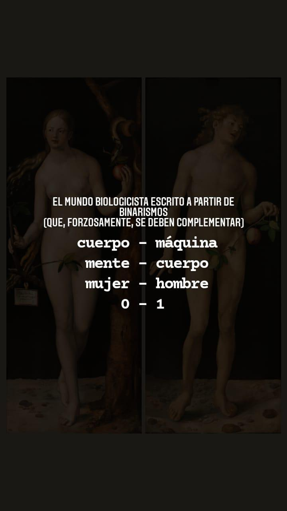
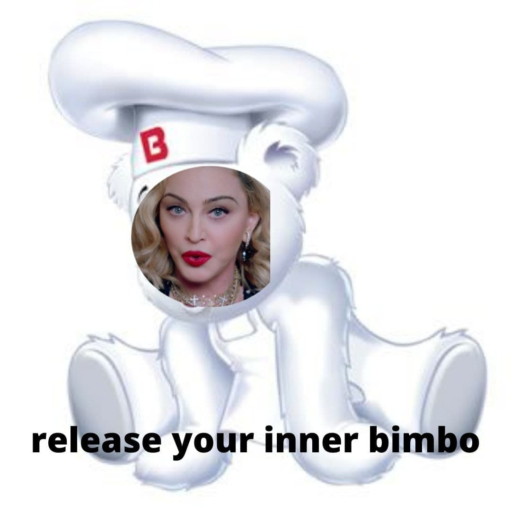

Bitácora: Corporalidad, la materia y el signo en la cultura
una bitácora para recordar todos los pensamientos que he tenido durante las clases
Decidí optar por un formato en internet porque prácticamente todas las imágenes, textos y .gifs aquí insertados fueron pensados desde internet para internet, no tenía sentido (ni deseaba hacerlo) sacarlos de su hábitat natural. Se mezclan citas de los textos leídos, reflexiones a partir de otros textos que leí también relacionados con el cuerpo [cyborg: Haraway y las VNS Matrix] y contenido de redes sociales (Instagram).

cuerpo digital: ¿cómo navega el cuerpo en entornos digitales? ¿cómo leemos digitalmente en la digitalidad? ¿leemos digitalmente o leemos en la digitalidad?

cuantificación del ser, cuantificación del yo ¿es lo mismo?
¿es sólo a través de la diferenciación de lx otrx (naturaleza -lx otrx como aquello que no somos: extraño y desconocido-) que podemos definir quiénes somos?
¿cuál es la importancia de la historia de las ciencias biologicistas en la concepción del cuerpo?

no concuerdo con: "sólo los humanos tenemos consciencia anticipada de nuestra finitud física y a ella aunamos el sabernos sujetxs pensantes y sintientes, encontrando en estas vivencias fenómenos que se resisten a ser percibidos y explicados sensorialmente"
yo opto por el postulado de Haraway: "ni el lenguaje, ni el uso de herramientas ni el comportamiento social ni los acontecimientos mentales logran establecer la separación entre lo humano y lo animal de manera convincente"
apuntes que rescato de la lectura: el cuerpo (como concepto) depende de: - los usos lingüísticos del territorio - los tabúes sociales impuestos de las especificidades culturales

el distanciamiento intelectual que hace la sociología entre la naturaleza y la cultura ha dado lugar a múltiples concepciones de lo digital en la www como lo inorgánico.


la academia ha descuidado al cuerpo: epistémica y físicamente

¿cuál es la relación que existe entre el yo-sociedad y el yo-cuerpo? ¿tiene que ver con la percepción o con la performatividad?
¿la biología del cuerpo es primordial para la concepción de éste? mi cuerpo social está atrapado en una sopa de significados que yo no escogí y con los que no estoy de acuerdo

"el cuerpo como un modelo de expresión altamente restringido"

para nada debemos olvidar que la sociobiología tiene atributos masculinos, por eso los científicos le han concedido tanto poder en la búsqueda de un yo
nuestros cuerpos-lugares para ver-ser: lugares en los que somos vistos
¿cuerpo como objeto-signo?
¡el cuerpo como objeto-signo!
"el cuerpo como objeto-signo"
el cuerpo = objeto-signo
una sociedad que necesita ser vista
"Tienes un cuerpo potente, no te lo guardes para ti misma" -Paris Hilton (una sociedad que necesita mirar)
el capitalismo se extiende basado en dos premisas:
1) expandir necesidades a través de los objetos de consumo y 2) la misma re-ingeniería de los mismos
para que un objeto se vuelva consumo:
debe transformarse en signo, ya que los signos son la base simbólica de la cultura
el cuerpo, pensado desde el síndrome del artificio dentro de la sociedad del espectáculo, es un objeto legítimo de consumo
por lo anterior, los espacios públicos se transforman en pasarelas
pensar los cuerpos no-humanos desde una manera anti especista es la manera más ecológica de habitar
¿podemos co-habitar?
increíble que la construcción de nuestro bienestar (no sólo la salud, sino la comodidad de los cuerpos) está pensada desde la idea que se puede lograr sólo a través de la eliminación de otros cuerpos (no únicamente animales no humanos, sino también cuerpos disidentes)
reflexiones finales
A partir de las múltiples lecturas y charlas durante las clases, pensando el cuerpo durante la pandemia y que fue automáticamente adscrito a desenvolverse, verse y consumirse a través de pantallas, menciono algunas ideas:
+ me he encontrado a mí misma replanteando las razones por las que soy de la manera que soy (castaña, cabello corto...) multiples veces al día (en realidad, más de las que me gustaría).
+ me resulta imposible no sintomatizar todo lo que veo en redes sociales.
+ he comenzado a ser más amable con las múltiples representaciones de mi identidad (e incluso sus secuenciales modificaciones físicas o virtuales) dentro y fuera de la red. [aceptar que no por existir en redes sociales deja de ser real o vigente]
+ las experiencias de mis compañeras resuenan en mí y se fusionan con las propias. me confundo a veces, tratando de recordar, si lo que recuerdo me sucedió a mí o a alguien más. como un déjà vu colectivo.
+ me he propuesto no cuestionar o preocuparme lo que haré en un futuro (o mi tiempo), sino ser más consciente de lo que haré con mi cuerpo (a qué rutina lo ajusto, qué trabajo desempeñará, cuáles serán los espacios que decido que habite) en una suerte de vivir sin sentir que me pierdo.
+ ser consciente de que las personas viven tan perdidas, ansiosas, tristes y confundidas de maneras que jamás voy a comprender y que todo lo anterior habita en los cuerpos.
*si bien pude haber escrito un resumen de las charlas y textos leídos en clase, prefiero una breve lista más significativa, con cosas que aprendí gracias este espacio, que llevaré más tiempo en mí y que se despliegan en un aspecto más importante que el académico: mi vida diaria.*
el conjunto de estas ideas y pensamientos no se hubiesen dado de la misma manera de haber omitido el elemento esencial: Erika, mi profesora. su clase fue una de mis últimas durante la licenciatura y fue un camino asombroso compartir con ella y mis compañerxs reflexiones tan significativas. en medio del caos mundial nos brindó un espacio seguro para hablar de temas que muchxs profesorxs no se toman el tiempo ni de voltear a ver.